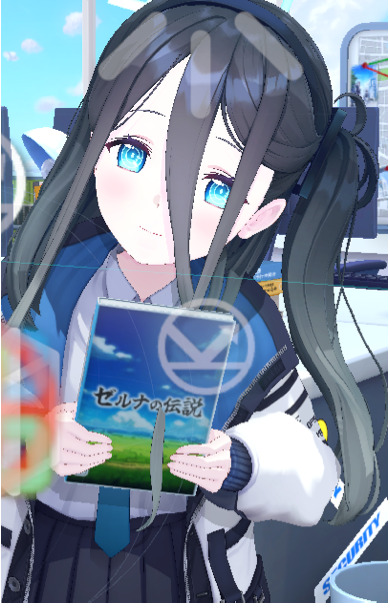
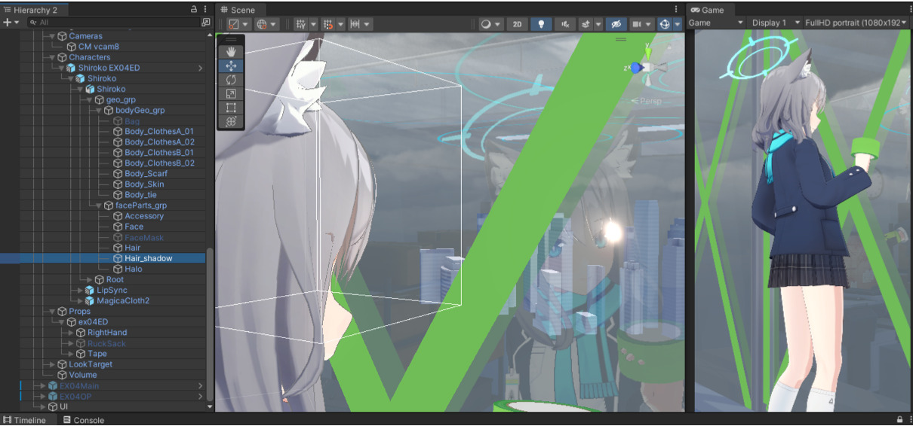
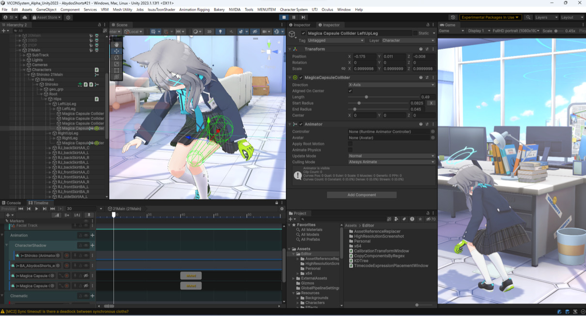
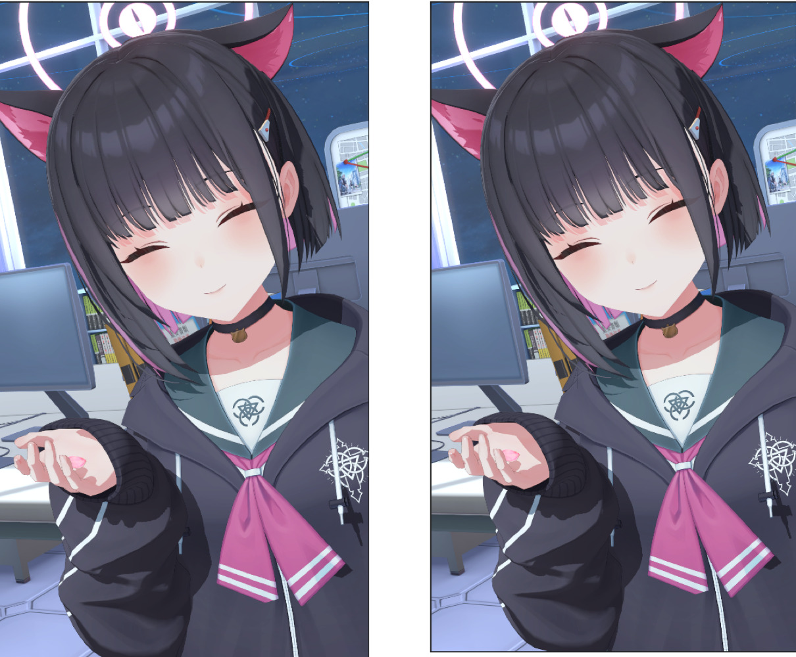
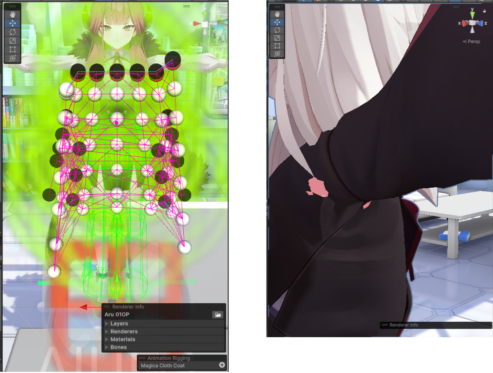
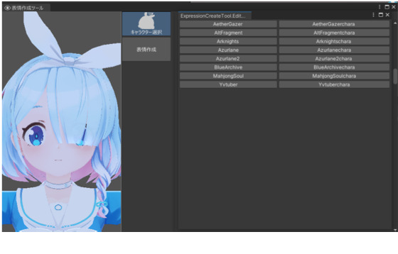
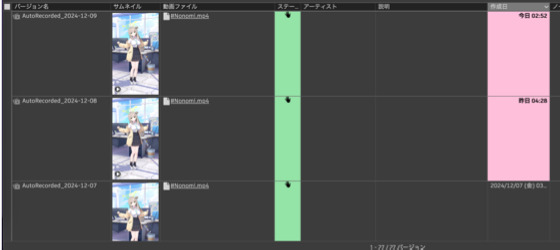
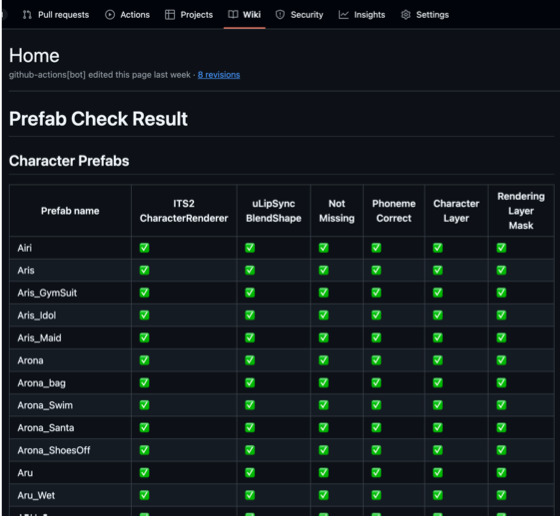

CASE 01 — SECONDARY MOTION
先生、ちょっとお時間いただきます！#17
揺れもの調整 / ルック調整
後半数話を担当。掲載例では、キャラクターの髪と手に持った小物の貫通を確認し、揺れものの設定を調整しています。
本資料では、株式会社Yostarで2023年1月から2024年12月まで担当した業務のうち、公開可能な制作物を中心に掲載しています。3Dモデルを使用したアニメーション制作、揺れもの・マテリアルなどのルック調整、モーションの微調整や小物3Dモデル制作に関するチーム内の取りまとめに加え、Unity上の制作支援ツールの開発・改修・運用保守に携わりました。
ルック、コライダー、コンストレインの調整例です。掲載画像は制作時のUnity画面です。

後半数話を担当。掲載例では、キャラクターの髪と手に持った小物の貫通を確認し、揺れものの設定を調整しています。

隔週ペースで担当。台本をもとに必要アセットを準備・制作依頼し、画面内の素材感を調整しました。例では、緑色テープの反射を確認しながら見え方を整えています。

序盤のエピソードを担当。モーションのタイミングに合わせてコライダーをアニメーションさせ、揺れ方と貫通を確認しながら調整しました。

約半年間担当。比較例では、キャラクターの手に影が表示されるよう範囲を調整しています。

隔週ペースで担当。揺れもの設定の修正や、モーション実行時に発生する衣装貫通へのコンストレイン調整を行いました。
担当した公開動画へのリンクです。各シリーズの動画をYouTubeで確認できます。
チーム内ツールの改修・パッケージング、新規開発、運用保守を担当しました。以下は担当したツールの概要です。

ブレンドシェイプを使用した表情アニメーション作成ツールを改修・保守。シーンを開かず、ツール内で作成・編集・表示を完結できます。

成果物動画を定期生成し、レビュー用Webツールへ自動アップロードするCI/CDの開発・設定を担当しました。

Prefabの必須コンポーネントとパラメータを検証し、結果をGitHub Wikiへ出力するツールを開発しました。
株式会社Yostarにて、3Dモデルを用いたカットアニメーション制作と社内向けツール開発に携わりました。Unity上でのモデル制御やルック・揺れもの調整に加え、制作工程で必要となるアセット準備の取りまとめ、エディタ拡張の設計・実装・運用保守を担当しました。
繰り返し発生するアセット管理やデータ出力をツール化し、手作業の削減と確認漏れの抑制を図りました。制作担当者が本来の調整作業に集中しやすいフローを意識して実装しています。
Unity / C# / MotionBuilder
役割：実装
プロジェクト規模：10～30名